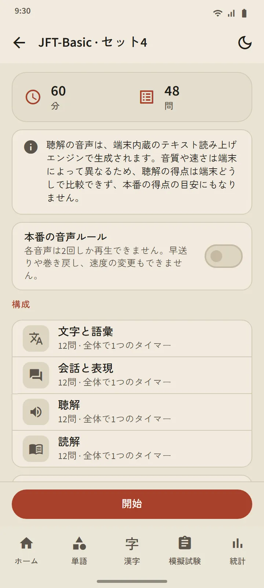
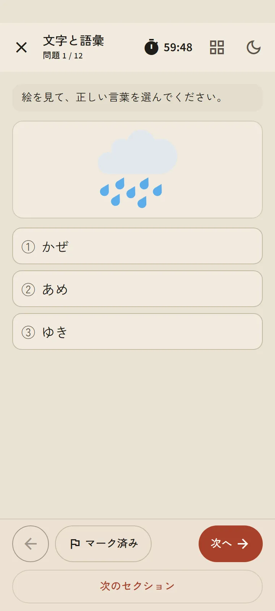
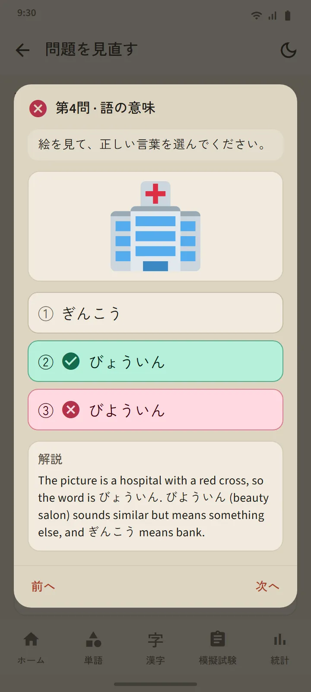

6 つのレベル、24 のセット
模擬試験タブのレベルカードを開くとレベルのページが表示されます：「開始」ボタン、番号つきのセットのタイル、履歴。全セットを終えるとミックス模擬試験が開き、まだ見たことのない問題が先に出ます。新しいセットはアプリのアップデートで追加されます。
| 試験 | セット | 1 セットの問題数 | 時間 |
|---|---|---|---|
| JFT-Basic | 8 | 48 | 60 分 |
| JLPT N5 | 8 | 68 | 90 分 |
| JLPT N4 | 2 | 85 | 115 分 |
| JLPT N3 | 2 | 102 | 140 分 |
| JLPT N2 | 2 | 107 | 155 分 |
| JLPT N1 | 2 | 101 | 165 分 |


問題の形式は本番にしたがっています
JFT-Basic の問題は、公式のサンプル問題と同じように選択肢が 3 つ（文法は 4 つ）、場面と指示は学習者の言語で、多くの問題に絵があります。JLPT の問題は選択肢が 4 つ、レベルに合ったふりがなつきで、読解の文章はいろいろな形です：短い話、メモ、お知らせ、メッセージ、メール、案内表。どのセットも公開前に見直しており、公式の問題は一切コピーしていません。
始める前の説明画面で、そのセットの構成（科目、問題数、時間）がわかります。時間は本番どおりで、JFT-Basic は全体で一つの時間、JLPT は科目ごとの時間です。次の科目に進むと、試験会場と同じように前の科目は閉じられます。自信のない問題には印をつけられ、途中で中断して（時間は進み続けます）、模擬試験タブから再開できます。


スマホの日本語音声で聴解
聴解のスクリプトはスマホの日本語音声読み上げエンジンが読み、話し手ごとに声を変えます。本番と同じように選択肢は耳で聞くだけで画面には出ず、JFT-Basic と N5 は絵の選択肢です。「本番の音声ルール」のスイッチをオンにすると、再生回数が本番と同じになります：JFT-Basic は 2 回、JLPT は 1 回。
声はスマホごとに異なるため、品質は機種によって違います。スマホにまだ日本語の音声がない場合は、アプリがインストール方法を案内し、入るまで聴解のパートは飛ばされます。

公式の尺度で結果、そして全問の解説
JFT-Basic の結果は、145、175、200 に印のある 10–250 の線の上に、区分名 A1、A2.1、A2.2 とともに描かれ、それぞれの区分が本番で何に使われるかもわかります。JLPT の結果は、得点区分ごとに基準点と比べて表示します。本番では一つの区分でも基準点に届かないと不合格になるからです。どちらも科目別・問題形式別の正答率がつきます。
問題を見直すボタンで、全問を自分の答え、正解、解説とともに確認でき、聴解問題はスクリプトも表示されます。解説は 12 言語で用意しています。レベルごとに最近の履歴が残り、スコアのグラフは統計タブにあります。
このスコアは上達を確かめるための目安で、本番の結果を予測するものではありません。
文型のレッスンがある文法問題には「この文型を学ぶ」のリンクがあり、そのレッスンにすぐ移れます。


無料版とプレミアム
無料版でも全セットを利用できます。「開始」を押すと、そのレベルの次の受験は 7 日間ロックされます。ほかのレベルは使えたままで、履歴と解説がロックされることはありません。ロック中は、広告を見れば 1 回分を追加で解除できます。プレミアムには間隔がありません。問題の画面には、だれに対しても広告は出ません。